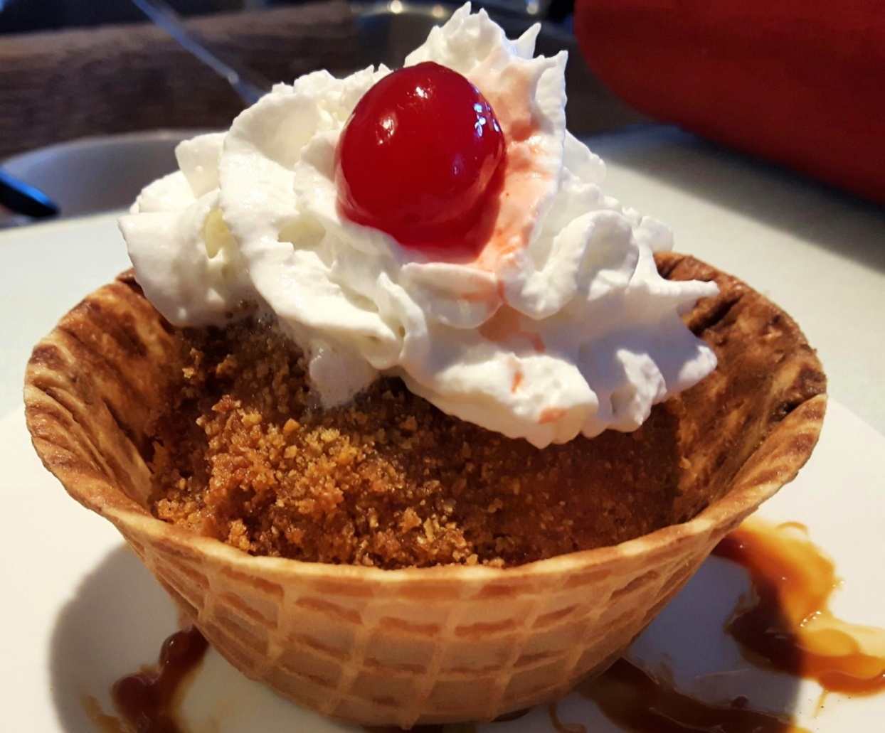

Fried Ice Cream

Description
This fried ice cream is crunchy outside and
smooth and creamy inside. Serve with whipped
cream, honey, and cherries.
Ingredients
- 1 quart vanilla ice cream
- 3 cups crushed cornflakes cereal
- 1 teaspoon ground cinnamon
- 3 egg whites
- 2 quarts oil for frying
Steps
- Scoop ice cream into eight 1/2-cup-sized balls. Place on a baking sheet and freeze until firm, about 1 hour.
- Combine cornflakes and cinnamon in a shallow dish. Beat egg whites until foamy in a separate bowl.
- Roll ice cream balls in egg whites, then in cornflakes, covering ice cream completely. Repeat if necessary. Freeze again until firm, about 3 hours.
- Heat oil in a deep-fryer or large, heavy saucepan to 375 degrees F (190 degrees C).
- Using a basket or slotted spoon, fry ice cream balls 1 or 2 at a time in hot oil until golden, 10 to 15 seconds. Drain quickly on paper towels and serve immediately.